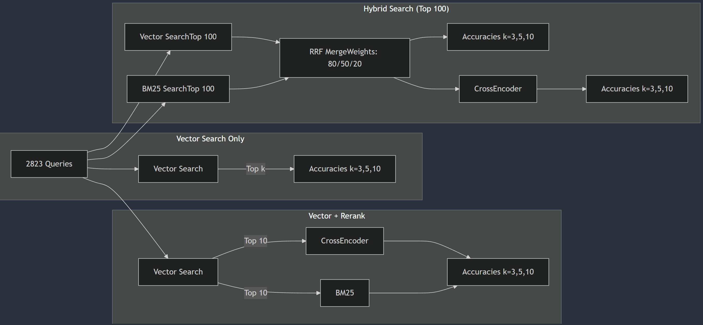

Key Findings:
Best Overall Accuracy: 98.30% (Hybrid)
Best Non-Hybrid Accuracy: 95.26%
Average Improvement with Reranking: -0.05%
Best Vector-BM25 Ratio: 50.0% Vector, 50.0% BM250. Introduction
Hybrid search takes advantage of lexical search and semantic search.
- TLDR; (Best accuracy- 98.30% okapi BM25 (50% weight) + embedding vector search (50% weight))
Reranking search overcomes the disadvantage of not knowing user’s query.
- TLDR; (Best accuracy- 97.73% hybrid + reranking with CrossEncoder “cross-encoder/ms-marco-MiniLM-L-6-v2”)
For comparison, the previous best accuracy was 95.16% with only embedding search.
To understand the full experiment pipeline (This notebook builds on top of the previous components of RAG below)
0.1 okapi BM25 search (Key component of hybrid search)
A statistical method utilizing the number of keywords and the length of documents. (Improved TF-IDF)
first introduced in 1970 and refined (25 times, hence the 25) over time.
BM25 requires the following inputs:
A search query
A set of documents (usually pre-retrieved by another algorithm)
Term frequencies in each document
Document lengths
Corpus statistics (e.g., average document length, total number of documents)
Okapi BM25:
- Okapi BM25 is a variant BM25 and it was chosen for this experiment.
show param details
k1 (Term Frequency Saturation): typically ranges from 1.2 to 2.0. Higher k1, more term repetition is favoured
b (Length Normalization): typically ranges from 0 to 1. Higher b, shorter documents will be favoured
ε (Epsilon): typically very small value from 0 to 0.25. Higher ε, slightly reduces the impact of IDF for very common terms.
show how it works
Let’s say we have three books:
“Dragon Friends” (100 words long)
“Friendly Pets” (80 words long)
“Big Book of Creatures” (200 words long)
Our search: “friendly dragons”
Step 1: Count words [Term Frequency Calculation]
“Dragon Friends”: “friendly” (2 times), “dragons” (5 times)
“Friendly Pets”: “friendly” (4 times), “dragons” (0 times)
“Big Book of Creatures”: “friendly” (1 time), “dragons” (2 times)
Step 2: Check book-length [Document Length Normalization]
“Dragon Friends” is the average length
“Friendly Pets” is a bit shorter
“Big Book of Creatures” is longer
Step 3: Special word score [Inverse Document Frequency (IDF)]
- “dragons” gets more points because it’s in fewer books
Step 4: Final score (simplified) [Scoring]
“Dragon Friends” receives the highest score
“Big Book of Creatures” comes second
“Friendly Pets” comes last (because it doesn’t have “dragons”)
0.2 Cross Encoder (Key component of reranking)
A sentence transformer for text pair classification.
First introduced by Microsoft Research in 2019 as part of MS MARCO project.
Required inputs:
A search query
A candidate document/passage
Base architecture: MiniLM-L-6 (6 layers, smaller version of BERT)
Max sequence length: 512 tokens
Output: Single relevance score between 0 and 1
Training data: MS MARCO passage ranking dataset
Model size: ~80MB
show how it works
Let’s use the same three books from BM25 example:
Step 1: Tokenization & Input Preparation
Query: “friendly dragons”
Documents tokenized and paired with query:
“[CLS] friendly dragons [SEP] Dragon Friends contains story…”
“[CLS] friendly dragons [SEP] Friendly Pets discusses…”
“[CLS] friendly dragons [SEP] Big Book of Creatures…”
Step 2: Contextual Understanding
Model processes both query and document simultaneously
Attention mechanism allows words to interact across query and document
Captures semantic relationships and context
Understands synonyms, related concepts (e.g., “dragon” ↔︎ “serpent”)
Step 3: Feature Extraction
Self-attention layers process the input
Each layer refines the understanding
Captures complex patterns and relationships
Learns semantic similarity beyond exact matches
Step 4: Relevance Scoring
Outputs single relevance score (e.g.):
“Dragon Friends”: 0.89 (high relevance)
“Big Book of Creatures”: 0.72 (moderate relevance)
“Friendly Pets”: 0.31 (low relevance)
0.3 Weighted Reciprocal Rank Fusion (Key component of hybrid search)
A statistical method combining multiple result sets with different relevance indicators into a single ranked list, with the ability to weight the importance of different retrieval methods.
Best performing individual ranking methods compared to other fusion techniques like Condorcet Fuse and CombMNZ
Weighted RRF uses a modified formula to determine the score for ranking each document:
\[ \text{score} = \sum_{q \in \text{queries}} w_q \cdot \frac{1}{k + \text{rank}(\text{result}(q), d)} \]
Where: - k is a ranking constant - q is a query in the set of queries - w_q is the weight assigned to query/method q - d is a document in the result set of q - result(q) is the result set of q - rank(result(q), d) is d’s rank within the result(q) starting from 1
Weighted RRF allows fine-tuning of the contribution of each search method while maintaining the simplicity of the original RRF.
It is particularly useful for combining results from different search techniques, such as lexical search and dense vector search, when one method is known to be more reliable for certain types of queries.
Show param details
k (Ranking Constant): typically set to a small value, such as 60. This constant helps prevent division by zero and adjusts the impact of high-ranked documents.
rank_window_size: determines the number of top documents from each retriever to consider for fusion.
weights: dictionary mapping each retrieval method to its weight (e.g., {‘vector’: 0.7, ‘lexical’: 0.3})
Show how it works
Let’s say we have two search methods:
- Lexical Search (weight = 0.3)
- Semantic Search (weight = 0.7)
Our search: “friendly dragons”
Step 1: Get rankings from each method
Lexical Search results:
- “Dragon Friends”
- “Big Book of Creatures”
- “Friendly Pets”
Semantic Search results:
- “Friendly Pets”
- “Dragon Friends”
- “Big Book of Creatures”
Step 2: Calculate Weighted RRF scores (using k = 1 for simplicity)
“Dragon Friends”: Score = 0.3 * 1/(1 + 1) + 0.7 * 1/(1 + 2) = 0.15 + 0.233 = 0.383
“Friendly Pets”: Score = 0.3 * 1/(1 + 3) + 0.7 * 1/(1 + 1) = 0.075 + 0.35 = 0.425
“Big Book of Creatures”: Score = 0.3 * 1/(1 + 2) + 0.7 * 1/(1 + 3) = 0.1 + 0.175 = 0.275
Step 3: Final ranking based on Weighted RRF scores
- “Friendly Pets” (0.425)
- “Dragon Friends” (0.383)
- “Big Book of Creatures” (0.275)
Note how the higher weight on semantic search (0.7) caused “Friendly Pets” to rank first in the final results, whereas it would have ranked second with unweighted RRF.
1. Experiment design
Notice the combinations of searching and reranking strategies, I am going to use true/false evaluation to compare.
Following is a high level overview of the experiment, focusing on comparing which search and which reranking worked best.

- Vector Search Only
- Base experiment using pure embedding vector search (Cohere-embed-v3-multilingual)
- Returns & evaluates top 3,5,10 results
- Vector + Rerank
- Vector search first gets top 10 results
- These 10 are reranked using either CrossEncoder or BM25
- Evaluates reranked top 3,5,10 accuracy
- Hybrid Search (Top 100) + Rerank
- Gets top 100 from both Vector & BM25 searches
- Merges using RRF with weights (80/20, 50/50, 20/80)
- Further reranking with CrossEncoder
- Evaluates final top 3,5,10 accuracy
Each section measures accuracy against 2,823 test queries
- Note that the difference between top 3,5,10 results is the amount of chunks fed to generation model before outputting true/false.
2. Data
The following bank question and answer data is used for this experiment. - FAQ_bank.csv has 1764 rows of ‘Question’ and ‘Answer’ string data.
2865 facts were gnerated from 1764 QnAs.
 |
|---|
Prompt: "From the following context, create "+ str(n) +" many truthful facts in bullet point forms. For example: 1. Telus is a Canadian company.\n2. Toronto is city of Ontraio, Canada.\nContext:".format(context) |
Where n=number of fact to generate, context=QnA in English |
Note that Azure GPT4o was used with temperature=0.1 |
3. Results
3.1 Table
| Name | Experiment | Accuracy |
|---|---|---|
| CrossEncoder reranking | Vector search (100%) llm_result with reranked top 3 | 94.22% |
| CrossEncoder reranking | Vector search (100%) llm_result with reranked top 5 | 94.87% |
| CrossEncoder reranking | Vector search (100%) llm_result with reranked top 10 | 94.98% |
| CrossEncoder reranking | Vector search (100%) llm_result with reranked top 10 | 94.98% |
| CrossEncoder reranking | Vector search (100%) llm_result with reranked top 10 | 94.98% |
| BM25 reranking | Vector search (100%) llm_result with reranked top 3 | 93.61% |
| BM25 reranking | Vector search (100%) llm_result with reranked top 5 | 94.73% |
| BM25 reranking | Vector search (100%) llm_result with reranked top 10 | 95.26% |
| Hybrid+CrossEncoder reranking | Vector search (80%) BM25 search (20%) RRF top 100 reranked with CrossEncoder top 3 | 97.20% |
| Hybrid+CrossEncoder reranking | Vector search (80%) BM25 search (20%) RRF top 100 reranked with CrossEncoder top 5 | 97.27% |
| Hybrid+CrossEncoder reranking | Vector search (80%) BM25 search (20%) RRF top 100 reranked with CrossEncoder top 10 | 97.66% |
| Hybrid+CrossEncoder reranking | Vector search (50%) BM25 search (50%) RRF top 100 reranked with CrossEncoder top 3 | 97.02% |
| Hybrid+CrossEncoder reranking | Vector search (50%) BM25 search (50%) RRF top 100 reranked with CrossEncoder top 10 | 97.73% |
| Hybrid+CrossEncoder reranking | Vector search (20%) BM25 search (80%) RRF top 100 reranked with CrossEncoder top 3 | 97.24% |
| Hybrid+CrossEncoder reranking | Vector search (20%) BM25 search (80%) RRF top 100 reranked with CrossEncoder top 10 | 97.70% |
| Hybrid+CrossEncoder reranking | Vector search (80%) BM25 search (20%) RRF top 120 reranked with CrossEncoder top 3 | 97.24% |
| Hybrid+CrossEncoder reranking | Vector search (80%) BM25 search (20%) RRF top 120 reranked with CrossEncoder top 5 | 97.38% |
| Hybrid+CrossEncoder reranking | Vector search (80%) BM25 search (20%) RRF top 120 reranked with CrossEncoder top 10 | 97.27% |
| Hybrid | Vector search (80%) BM25 search (20%) RRF top 100 top 3 | 94.01% |
| Hybrid | Vector search (80%) BM25 search (20%) RRF top 100 top 5 | 97.31% |
| Hybrid | Vector search (80%) BM25 search (20%) RRF top 100 top 10 | 97.48% |
| Hybrid | Vector search (50%) BM25 search (50%) RRF top 100 top 3 | 97.10% |
| Hybrid | Vector search (50%) BM25 search (50%) RRF top 100 top 5 | 97.80% |
| Hybrid | Vector search (50%) BM25 search (50%) RRF top 100 top 10 | 98.30% |
| Hybrid | Vector search (20%) BM25 search (80%) RRF top 100 top 3 | 97.34% |
| Hybrid | Vector search (20%) BM25 search (80%) RRF top 100 top 5 | 97.98% |
| Hybrid | Vector search (20%) BM25 search (80%) RRF top 100 top 10 | 97.87% |
3.2 Visualization
summary of each plot:
- Vector-BM25 Ratio Impact (Top Left):
- Performance decreases as vector search ratio increases
- Best performance at 50% vector/50% BM25
- Clear downward trend from 20% to 80% vector ratio
- Accuracy Distribution by Top K (Top Right):
- Higher K obviously yields better accuracy (More chance that ground truth chunk is returned within top k)
- Impact of Reranking (Bottom Left):
- Minimal difference between with/without reranking
- Without reranking: 96.57%
- With reranking: 96.52%
- Surprisingly, reranking slightly decreases average accuracy (Perhaps the CrossEncoder model is too weak?)
Summary of improvements from Top 3 to Top 10:
CrossEncoder: 0.76% improvement from top 3 to top 10
BM25: 1.65% improvement from top 3 to top 10
Hybrid+CrossEncoder: 0.46% improvement from top 3 to top 10
Hybrid: 3.47% improvement from top 3 to top 10
Average accuracy for each final top K:
Top 3: 94.76%
Top 5: 96.05%
Top 10: 96.34%Here is another interesting analysis. - obviously, more top k the better the accuracy. - observe that the jump from top 3 to top 5 is generally much more impactful than top 5 to 10, even though latter is adding 5 more chunks compared to 2 more chunk in the former.
3.2 Compute details
- CrossEncoder compute time
- CPU ~ 0.244 seconds to rerank 10 chunks
- GPU ~ 0.012 seconds to rerank 10 chunks, 0.06 seconds to rerank 100 chunks
- BM25 compute time
- CPU ~ 0.006 seconds to rerank 10 chunks
4. Summary
- Hybrid search with Vector search and BM25 search ratio of 50/50 + no reranking gave the highest accuracy at 98.3%
- Surprisingly, reranking with CrossEncoder DECREASED the overall accuracy by -0.05%!
- Surprisingly, there were instances where feeding generation model top 10 instead of top 3 actually decreased the accuracy. (See Vector search (80%) BM25 search (20%) RRF top 120 reranked with CrossEncoder top 5 vs top 10 in the table, 98.34% vs 97.27%)
This is a critical finding because reranking step with CrossEncoder would have required an expensive GPU compute for production.
Shows us that there is no universal solution in machine learning. Every custom data must be thoroughly experimented.